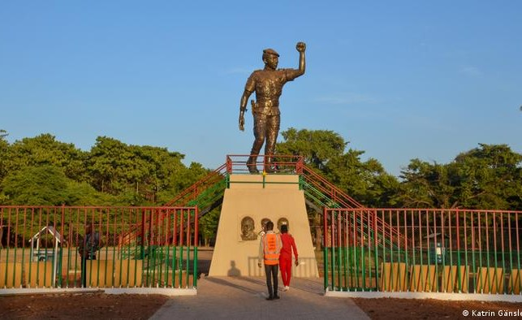
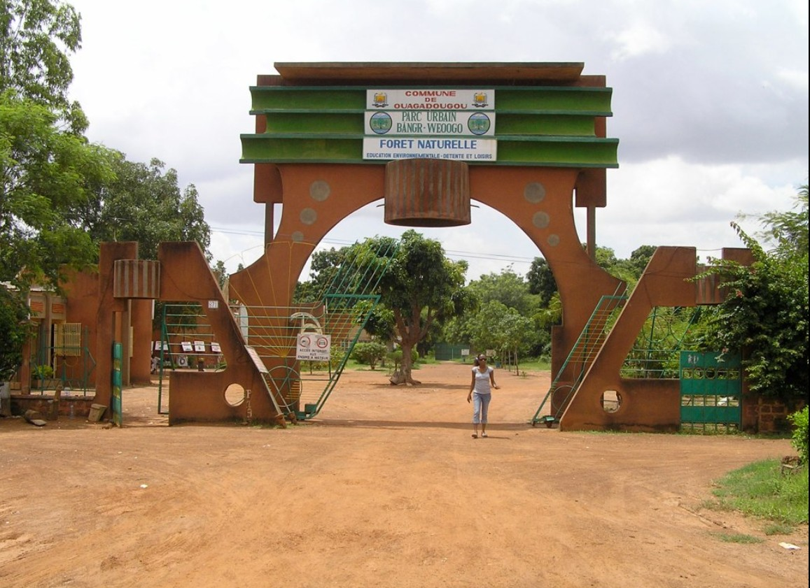
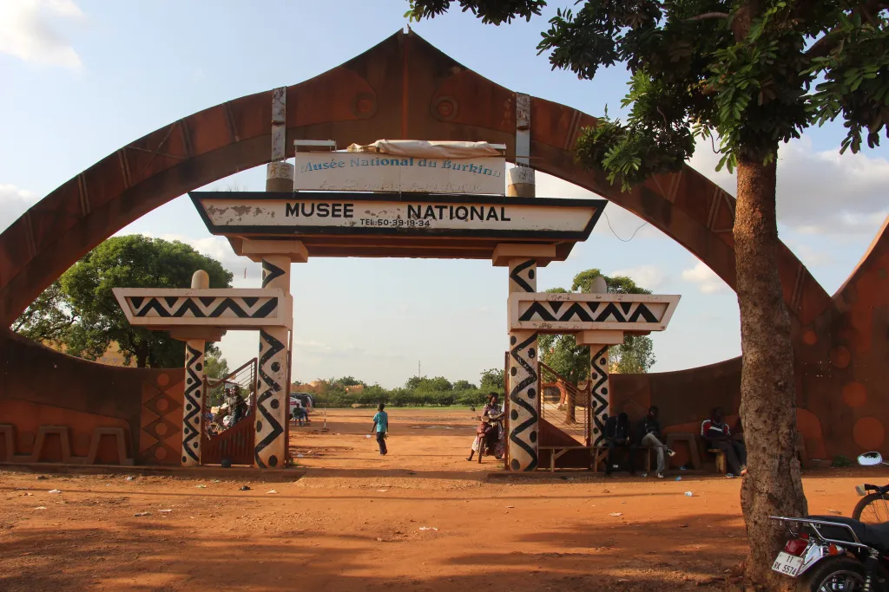
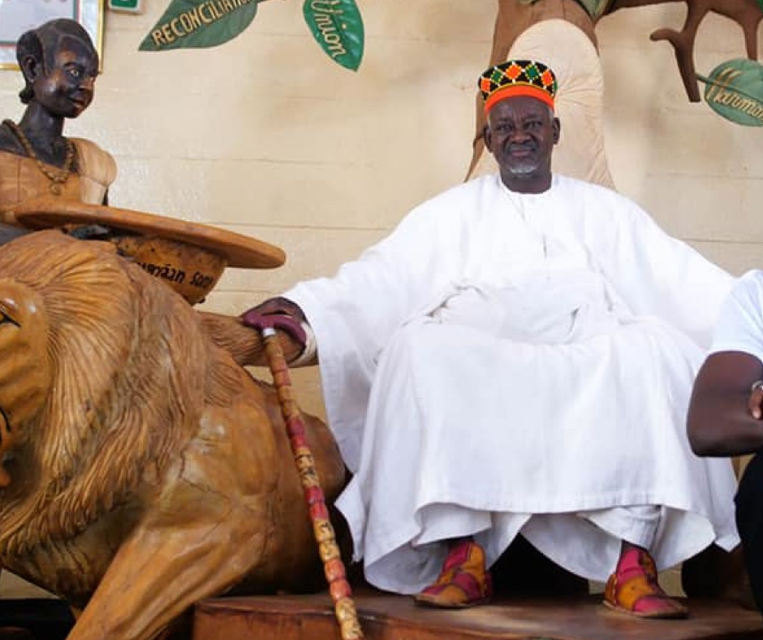
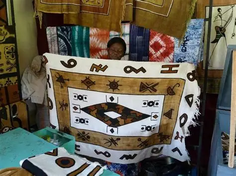
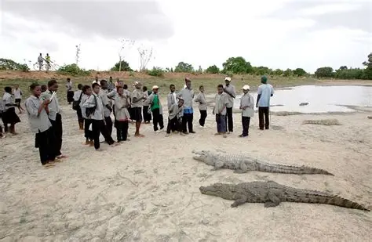
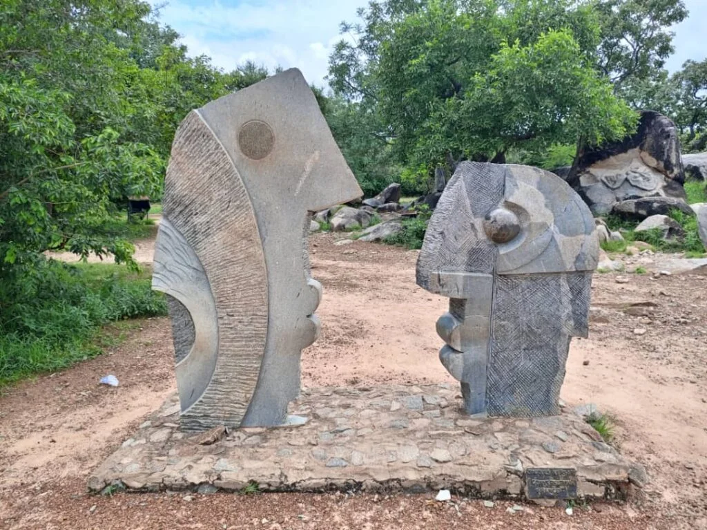
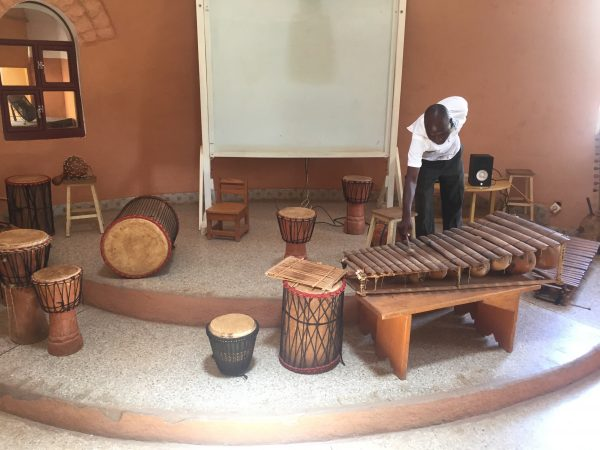
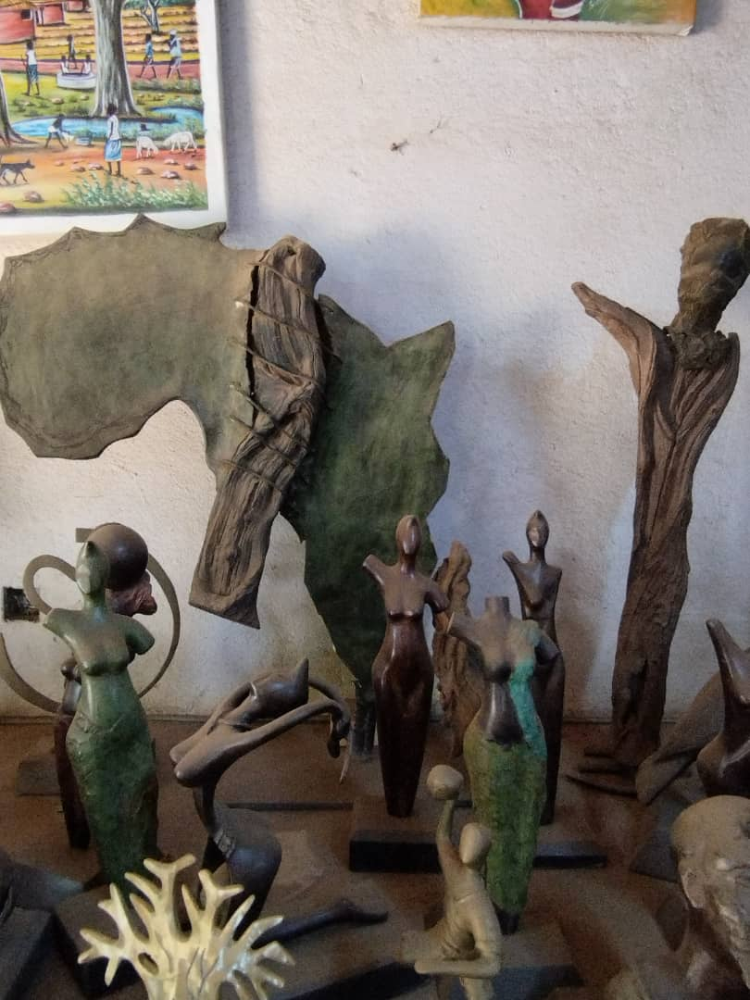
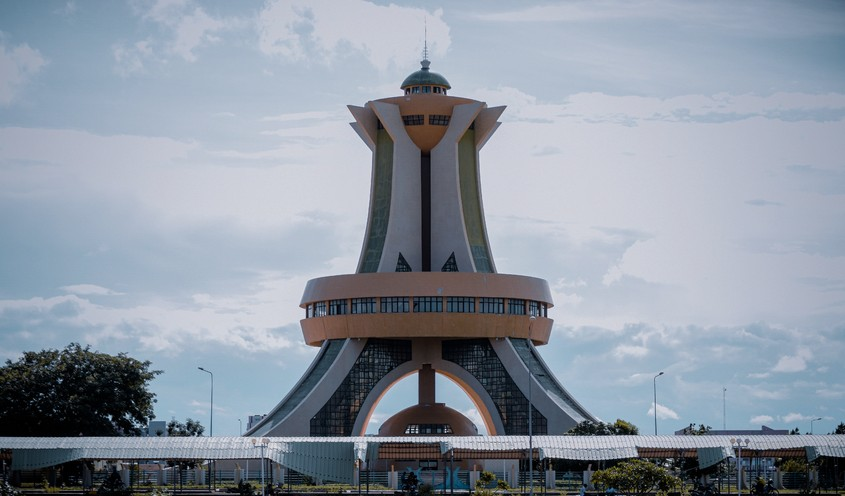

Galerie des Sites Touristiques
Découvrez en images les 9 sites incontournables de notre sélection pour explorer la richesse culturelle et naturelle de la région de Ouagadougou.

1. Mémorial Thomas Sankara
Un lieu historique de mémoire et d'hommage érigé en l'honneur du père de la révolution burkinabè.

2. Parc urbain Bangr-Weogo
Une forêt classée et véritable poumon vert au cœur de la capitale, abritant une faune et une flore diversifiées.

3. Musée National
Le conservatoire du patrimoine culturel burkinabè, regroupant une riche collection de masques, de costumes et d'habitats traditionnels.

4. Palais du Mogho Naaba
Le siège de la cour royale moaga, célèbre pour sa cérémonie traditionnelle du "faux départ" chaque vendredi matin.

5. Village Artisanal de Ouagadougou
Un grand centre de création et d'exposition où s'exprime tout le savoir-faire des meilleurs artisans du pays.

6. Caimans sacrés de Bazoulé
Un site mystique situé aux portes de Ouaga, où la population cohabite en toute harmonie avec des crocodiles sacrés.

7. Sculpture sur granite Laongo
Un magnifique sanctuaire artistique en plein air où des sculpteurs du monde entier façonnent la roche de granit.

8. Musée de la musique
Une collection unique d'instruments de musique traditionnels (balafons, tambours, cornes) issus des différentes communautés du Burkina.

9. Centre National d'Artisanat et d'Art (CNAA)
Un haut lieu de formation, de production et de promotion des arts plastiques et de l'artisanat d'art de Ouagadougou.

10. Monument des Héros nationaux
Un symbole de dignité, de sacrifice et de mémoire collective, un hommage vibrant à tous ceux qui ont donné leur vie pour la liberté et la souveraineté du Burkina Faso.